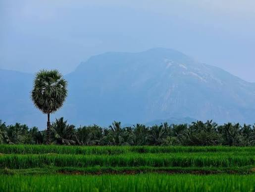
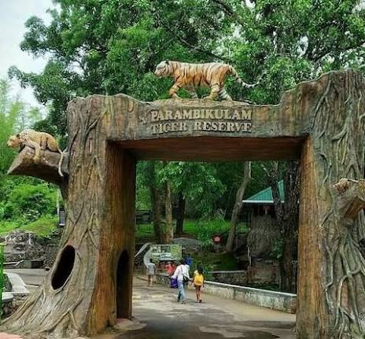
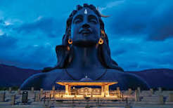

Sulakkal Mariamman TempleCompound groundsSulakkal, Tamil NaduDirectionsSituated roughly 14 km from Pollachi, this 400-year-old temple houses a self-manifested (Swayambhu) idol of Goddess Mariamman.Pollachi Ayyappan Temple4.7(894)Hindu templeM284+W9M, Arulmigu sri ayyappaswamy manjalamman temple,,DirectionsA peaceful and well-maintained modern shrine located in the heart of town, offering a quiet spiritual atmosphere.Arulmigu Mariamman Temple4.6(695)Hindu temple23, Theppakulam StCallDirectionsA prominent town temple in Pollachi known for its vibrant annual three-day chariot festival.

Pollachi boasts a treasure trove of temples, blending historic arc...Sparsa ResortsTemples Near Pollachi: Complete Spiritual Guide - Sparsa ResortsTemples Near Pollachi: A Complete Spiritual Guide to Kongu Nadu * Arulmigu Masani Amman Temple. The most powerful Amman temple in ...WikipediaMasani Amman - WikipediaArulmigu Sri Masani Amman Temple is a highly revered shrine situated in Anaimalai, which is located about 24 km (15 mi) southwest ...Show alltell me about important places in pollachiMap data ©2026 Terms10 km Pollachi is a beautiful destination nestled at the foot of the Western Ghats, widely celebrated for its lush coconut groves, expansive tea estates, and diverse wildlife reserves. The town seamlessly blends tranquil nature escapes, thrilling hill drives, and ancient cultural heritage sites..
Here you can find many places to spend time
Pollachi is known for coconuts.Even the industry is growing, Agriculture is mostly playing an important role in the growth.

